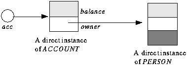

3 CLASSES
A class, it was said above, is an implementation of an abstract data
type. This means that it describes a set of run-time objects, characterized
by the features (operations) applicable to them, and by the formal
properties of these features.
Such objects are called the direct instances of the class. Classes
and objects should not be confused: "class" is a compile-time
notion, whereas objects only exist at run time. This is similar to the
difference that exists in classical programming between a program and one
execution of that program, or between a type and a run-time value of that
type.
"Object-Oriented" is a misnomer; "Class-Oriented Analysis,
Design and Programming" would be a more accurate description of the
method.
To see what a class looks like, let us look at a simple example, ACCOUNT,
which describes bank accounts. But before exploring the class itself it
is useful to study how it may be used by other classes, called its clients.
A class X may become a client of ACCOUNT by declaring
one or more entities of type ACCOUNT. Such a declaration
is of the form:
The term "entity" generalizes the more common notion of "variable".
An entity declared of a reference type, such as acc, may at any
time during execution become "attached to" an object; the type
rules imply that this object must be a direct instance of ACCOUNT
-- or, as seen below, of a "descendant" of that class.

An entity and the attached object
An entity is said to be void if it is not attached to any object. By
default, entities are void at initialization. To obtain objects at run-time,
a routine r appearing in the client class X may use a creation
instruction of the form
which creates a new direct instance of ACCOUNT, attaches acc
to that instance, and initializes all its fields to default values. A variant
of this notation, studied below, makes it possible to override the default
initializations.
Once the client has attached acc to an object, it may call on
this object the features defined in class ACCOUNT. Here is an extract
with some feature calls using acc as their target:
- acc.open ("Jill")
- acc.deposit (5000)
- if acc.may_withdraw (3000) then
- acc.withdraw (3000); print(acc.balance)
- end
These feature calls use dot notation, of the form target.feature_name,
possibly followed by a list of arguments in parentheses. Features are of
two kinds:
- Routines (such as open, deposit, may_withdraw,
withdraw) represent computations applicable to instances of the
class.
- Attributes represent data items associated with these instances.
Routines are further divided into procedures (commands, which
do not return a value) and functions (queries, returning a value).
Here may_withdraw is a function returning a boolean; the other three
routines called are procedures.
The above extract of class X does not show whether, in class
ACCOUNT, balance is an attribute or a function without argument.
This ambiguity is intentional. A client of ACCOUNT, such as X,
does not need to know how a balance is obtained: the balance could be stored
as attribute of every account object, or computed by a function from other
attributes. Choosing between these techniques is the business of class
ACCOUNT, not anybody else's. Because such implementation choices
are often changed over the lifetime of a project, it is essential to protect
clients against their effects.
So much for how client classes will typically use ACCOUNT. Below
is a first sketch of how class ACCOUNT itself might look. Line segments
beginning with -- are comments. The class includes two feature
clauses, introducing its features. The first begins with just
the keyword feature , without further
qualification; this means that the features declared in this clause are
available (or "exported") to all clients of the class. The second
clause is introduced by
feature {NONE}
to indicate that the feature that follows, called add, is available
to no client. What appears between the braces is a list of client classes
to which the corresponding features are available; NONE is a special
class of the Kernel Library, which has no instances, so that add
is in effect a secret feature, available only locally to the other routines
of class ACCOUNT. So in a client class such as X, the call
acc.add (-3000) would be invalid.
- class ACCOUNT feature
- balance: INTEGER
- owner: PERSON
- minimum_balance: INTEGER is 1000
- open (who: PERSON) is
- -- Assign the account to owner who.
- do
- owner := who
- end
- deposit (sum: INTEGER) is
- -- Deposit sum into
the account.
- do
- add (sum)
- end
- withdraw (sum: INTEGER) is
- -- Withdraw sum
from the account.
- do
- add (-sum)
- end
- may_withdraw (sum: INTEGER): BOOLEAN is
- -- Is there enough money to withdraw
sum?
- do
- Result := (balance >= sum + minimum_balance)
- end
- feature {NONE}
- add (sum: INTEGER) is
- -- Add sum to
the balance.
- do
- balance := balance + sum
- end
- end -- class ACCOUNT
Let us examine the features in sequence. The is
... do ...end
distinguishes routines from attributes. So here the class has
implemented balance as an attribute, although, as noted, a function
would also have been acceptable. Feature owner is also an attribute.
The language definition guarantees automatic initialization, so that
the initial balance of an account object will be zero after a creation
instruction. Each type has a default initial value, used for initialization:
zero for INTEGER and REAL, false for BOOLEAN, null
character for CHARACTER, and a void reference for reference types.
The class designer may also provide clients with different initialization
options, as will be shown below in a revised version of this example.
The other public features, open, deposit, withdraw and may_withdraw
are straightforward routines. The special entity Result, used in
may_withdraw, denotes the function result; it is initialized on
function entry to the default value of the function's result type.
The secret procedure add serves for the implementation of the
public procedures deposit and withdraw; the designer of ACCOUNT
judged it too general to be exported by itself. The clause is
1000 introduces minimum_balance as a constant attribute, which
will not occupy any space in instances of the class; in contrast, every
instance has a field for every non-constant attribute such as balance.
In Eiffel's object-oriented programming style any operation is relative
to a certain object. In a client invoking the operation, this object is
specified by writing the corresponding entity on the left of the dot, as
acc in acc.open ("Jill"). Within the class,
however, the "current" instance to which operations apply usually
remains implicit, so that unqualified feature names, such as owner
in procedure open or add in deposit, mean "the
owner attribute or add routine relative to the current instance".
If you need to denote the current object explicitly, you may use the
special entity Current. For example the unqualified occurrences
of add appearing in the above class are equivalent to Current.add.
In some cases, infix or prefix notation will be more convenient than
dot notation. For example, if a class VECTOR offers an addition
routine, most people will feel more comfortable with calls of the form
v + w than with the dot-notation call v.plus (w).
To make this possible it suffices to give the routine a name of the form
infix "+" rather than plus;
internally, however, the operation is still a normal routine call. Prefix
operators are similarly available.
The above simple example has shown the basic structuring mechanism of
the language: the class. A class describes a data structure, accessible
to clients through an official interface comprising some of the class features.
Features are implemented as attributes or routines; the implementation
of exported features may rely on other, secret ones.
  
|